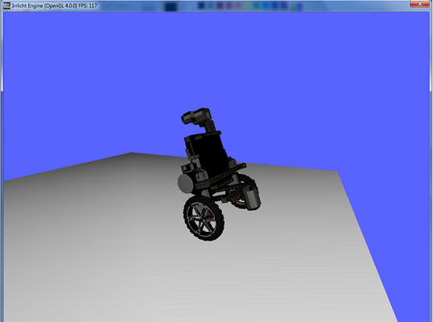

Virtual Prototyping
Behzad Samadi, PhD
Mechatronics3D
DIPECC 2014, Dubai
April 9, 2014
It All Started with LEGO!
LEGO MINDSTORMS NXT

LEGO®
LEGO MINDSTORMS EV3

LEGO®
Visual Programming
NXT-G

LEGO®
Open Software

Open Hardware

Bicycle

Razyeh Mousavi
Ball on Plate

LEGO MINDSTORMS
It was very exciting at first but I had more than 40 students and only 3 sets of LEGO Mindstorms!
Operating System

Virtual Robot

3D Animation

Controller Design

Amazing!
We realized that before making the robot, there are a lot of things that we need to learn.
How About a Virtual LEGO Set?
- This virtual robot is interesting but what if I want to build another robot?
- How hard is it to build a virtual robot?
Causal Modeling
- Writing the dynamic equations
- Converting the equations to ordinary differential equations
- Creating a signal flow model e.g. a Simulink model
- Building a virtual robot seems to be different from building a real robot
Virtual LEGO Set
What if we had a set of virtual LEGO parts and we could build a robot with them?
Virtual LEGO Set
We made one!

Alborz Gharraee
Modelica and MapleSim

- The connections between components are physical connections like position, voltage, flow,...
- Acausal modeling is very similar to building a real system
Acausal Modeling with MapleSim

Functional Mockup Interface

- Model Exchange, Co-Simulation, Product Lifecycle Management
- There are over 35 Tools supporting FMI
Courtesy of ITAE